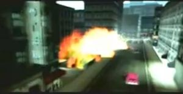
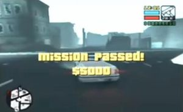
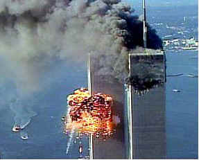

Anexo:Atentados de Toni Cipriani
 De: La Frikipedia, la enciclopedia extremadamente seria.
De: La Frikipedia, la enciclopedia extremadamente seria.
Toni Cipriani ha dado pie a ser un personaje del GTA al que se le han juntado los trucos, la facilidad del juego que protagoniza y su bestiajez, para crear uno de los seres mas gamberros que se han creado en la historia de los videojuegos.
Tras largas gestiones, se ha decidido separar los atentados de su artículo principal para acabar así con el fenómeno anti-lista. Sus atentados están recopilados aqui. También se mencionará una lista de todos los trabajos que ha tenido Toni y de los trucos que mas le gusta usar para ampliar el artículo:
Atentados Conocidos
Atención, todo lo recopilado aquí se puede hacer en GTA Liberty City Stories salvo contadas excepciones.
 Toni provocando un atentado destruyendo un barrio
- Ir vestido en calzoncillos
- Ir vestido como Elvis (y ganar medio millon en la misión en la que gana el traje (misión mejor pagada de todo el GTA))
- Ir con motosierra a una carrera de motos y motosierrar a un contricante dejarlo medio vivo solo para obtener una moto de color unico(veridico funciona al 100%)
- Ir vestido como el de Matanza en Texas
- Matar al unico (Ahora cooperar en un asesinato se considera ser asesino)
puto y gordo chulo maricón de la ciudad
- Liarla en Portland Island
- No perderse en Shoreside Vale
- Perderse en Shoreside Vale
- Quedarse atrapado en coches que explotan o le aplastan.
- Matar al gordo propietario de una carnicería y venderlo como picadillo en ella
- El primer atentado mayormente conocido es entrar en la oficinas de Donald Love colandose y sin meterse en una misión.

Mató a ese
gordo y lo vendió como picadillo en su carnicería
- Manejar el coche de Paulie Sindacco a distancia como si de un teledirigido se tratase
- Quedarse libre cuando le arrestan
- Tomar el metro y hacer que Salvatore Leone lo tome.
- Tomar el tren elevado y hacer que Salvatore Leone lo tome.
- En dicho tren elevado es capaz de subir coches de un tamaño considerable al anden o a las vias.
- Si esta dentro del coche anteriomente mencionado, el coche explota, si no está subido a él, el tren lo atravesará. (Hace lo mismo en el metro)
- Tomar el Ferry, a pie o en coche
- Resucitar cuando le matan
- Encontrar trabajillos de fracasado
- Destruir Fort Staunton enterito con 3 pedazo de bombas ocultadas en la antigua linea del metro.
- Se coló en un edificio en obras para conseguir armas
- En dicho edificio se colo haciendo una rampa con otro edificio, que era casino y burdel a la vez, y lo tiró el solito con un coche bomba
- Matar al alcalde, y sin conseguir estrellas (sin truco)
- Robar un helicoptero en diferentes misiones.
- Cagarse en todo (incluso fuera del water)
- Matar con la mirada (de asco al mirarle por ser feo)
- Pasar dia si, noche también sin dormir, sin comer, sin cagar, sin mear...
- Hacer explotar todos los coches de su alrededor
- Intentar hacer alcalde a un canival.
- Hacer saltar coches en el hagua.
- Debido a un fallo del juego consiguió hacer que el puente levadizo que conecta la segunda con la tercera isla funcionase antes de lo previsto (ES TOTALMENTE VERÍDICO)
- meter mas de un coche en el garaje.
- Saltó con una ambulancia hacia en tren elevado.
- Colarse al Ferry sin pagar.
- Matar a Ned Burner (Plagio de un agente secreto de la CIA, verídico)
- Atravesar la puerta del Pay N Spray de la primera isla
- Hace que los coches que atropellen los trenes no le descarrilen, solo le atraviesan.
- A veces cuando habla no abre la boca
- Teletransportarse con una moto en cierta misión, con ayuda de un fallo de un truco.
- Amañar los votos en las elecciones
- Qudarse encerrado en la carniceria de Casa
- En una misión se bajó de la moto sin pulsar el triangulo, sin caerse, y sin que el video precisase de ello.
- Pasarse las misiones de policía con 12 tanques distintos y sin necesidad de usarlos (Solo para subirse a ellos (Verídico))
- Llevar menos de una semana en la ciudad y ya le conoce todo Dios.
- Tener una mansión y sin que nadie se la dé, ni él mismo.
- Cambiar el tamaño de la luna con un rifle.
- Caer de chorrocientos cincuentra y tres metros de altura y no morir en el intento.
- Explotar coches en los videos, a veces no lo consigue.
- Robar un coche patrulla y ser poli sin siquiera tener uniforme.
- Ganar dinero haciendo caballitos con una moto
- Matar a cuantos habitantes quiera sin que se llegue a extinguir la población
- Decir: ¡Ostia puta, la virgen en technicolor!
- Hacer arrancar un coche sin llave
- Arrancar postes de luz con una scooter
- Llevar mas de 10 armas con municion bajo la ropa sin que se le note nada
 Si, misión pasada y todo lo que quieras, pero ha dejado el barrio de antes hecho una
puta mierda - No interactuar con los objetos de la casa, solo con el icono de la vida, el de guardar y el armario, y porque salió de él.
- Llevar todo tipo de armas en el bolsillo
- Volar en coche por los tejados
- Robar coches de la manera mas facil posible
- Conseguir los 100 paquetes ocultos (Yo solo conseguí 97)
- Tener tiempo libre (para liarla)
- Mutilar personas de cualquier manera
- Hacer que le odien bandas que eran amigas antes
- Matar a los que le dan misiones
- Poner bombas en el restaurante de su madre...
- Llevar al desguace coches explotados
- Encontró un sitio secreto que también aparecia en GTA 3
- Pintar taxis explotados (después quedan mas oscuros)
- Hacer que se llene el cementerio
- Encontrar los objetos ocultos, masacres y saltos unicos.
 Por algo las Torres Gemelas no aparecían en el juego...
- Crear un superejercito de hombres y matar a quien él ordene.
- Trucar la ley para que le hagan mas caso los medios de comunicación
- Pasar por un puente en construcción
- No decidirse a la hora de robar coches
- Hacer que el puente levadizo atraviese sus coches
- Subirse arriba del puente levadizo y tirarse
- Tirar gente arriba o abajo del puente levadizo.
- Pegar saltos hacia lugares inospitos.
- Hacerse pasar por abogado
- Cortar a 20 tios la cabeza en menos de 2 minutos.
- Hacer que todos los hombres le sigan para predicar su religión y formar un super-ejercito
- Poner explosiones en cadena
- Conducir coches que hallan explotado
- Hacer que queden atravesados
- Hacer que le paguen por la chatarra suya y por la de los demas.
- Meterse en el aparato que destroza los coches de la chatarra, morir en él y resucitar
- Una vez robó un coche deportivo del concesionario mientras trabajaba. Fue despedido pero reencontratado.
- Conducir el tanque y oponerse a cualquiera con él.
- Una vez Toni no podia continuar en una misión porque la cagó metiendo un truco, pero el letrero de misión fallida no apareció por miedo a ser destruido. Para finalizar la misión Toni tuvo que sacrificarse o reiniciar la consola (verídico)
- Matar gente desde su casa
- Llevarse mal con las Triadas (y con mas bandas, pero en menos cantidad)
- Trabajar en cualquier sitio mientras esté abierto, no importa sus estudios o si no le pueden contratar, el trabajará igual.
- No fiarse ni de su sombra
- El día que jugues a multijgador será el dia que le saques mas partido al juego
- Llegar a ser el capo de la mafia
- Ser el capo de la mafia cuando ya no pintas nada.
Trabajos de Toni
Toni a trabajado para la gente que se menciona acontinuación, montanto algún que otro atentado:
Trucos mas usados por Toni
- Pintar los coches negros, rosas o plateados.
- Hacer que los policias se fijen mas en él
- Camuflarse por un peatón de la ciudad (y si metes el truco rápido solo va para alante)
- Cambiar el tiempo por el que le de la gana
- Crear un superejercito de hombres (aunque algunas wuevs digan que son tias(veridico al 100000000000000000000000000000000%))
- hacer el mundo Booble con todas las cabezas bien grandes.
- Cambiar el tamaño de las ruedas de las motos
- Ciudad completamente para él (Sin policias siempre)
Puede hacer mas cosas, pero esas son las que mas utiliza.
|
|
 Shooter Shooter
 Terror Terror
 Velocidad Velocidad
 Rol Rol
 Estrategia Estrategia
 Aventuras Aventuras
 Fight! Fight!
 Clásicos Clásicos
 Deportivos Deportivos
 Aventura gráfica Aventura gráfica
 Novela visual Novela visual
 Personajes de videojuegos Personajes de videojuegos
|
Autor(es):
- Butters2
- ADrIaN1996
- Volver al futuro 2
- Shadowmura
- XRogerBlackX
- El tigre toño
Frikipedia 2005-2016, Licencia
GFDL 1.2 - Extraído por FrikiLeaks